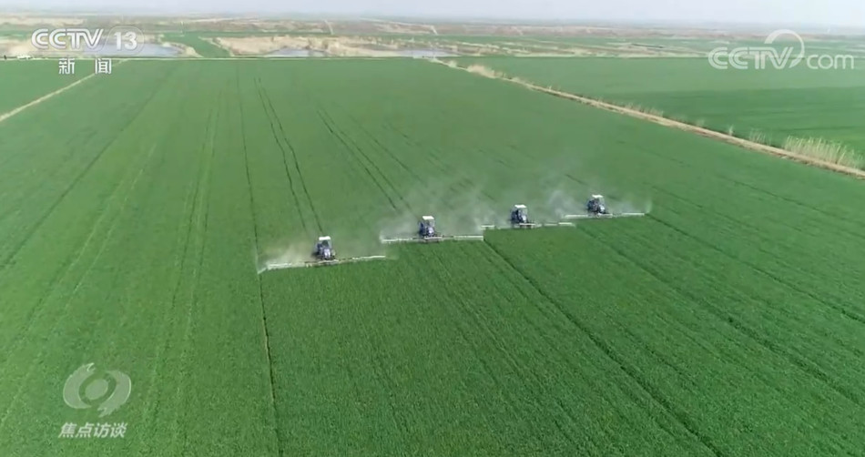

焦点访谈：中国底气 新思想夯实大国粮仓
2023年03月02日 21:50 央视网
央视网消息（焦点访谈）：党的十八大以来，以习近平同志为核心的党中央始终把解决粮食安全问题作为治国理政的头等大事，重农抓粮一系列政策举措有力有效，我国粮食产量站稳1.3万亿斤台阶，实现谷物基本自给、口粮绝对安全。我们把饭碗牢牢端在自己手中，为保障经济社会发展提供了坚实支撑，为应对各种风险挑战赢得了主动。连续八年1.3万亿斤，这个沉甸甸的数据是如何取得的呢？
人勤春来早，春耕农事忙。立春之后，由南到北，我国春耕春管工作陆续展开，春天的田野处处生机盎然。
今年，我国启动了新一轮千亿斤粮食产能提升行动，这是一个新的起点。2015年以来，我国粮食产量连续8年稳定在1.3万亿斤以上，人均粮食占有量始终稳稳高于国际公认的400公斤粮食安全线。从十年前的约12200亿斤到2022年的约13700亿斤，粮食产量提高了1500亿斤。

粮食生产出路在科技。10年来。我国农业科技进步贡献率提高7个百分点，超过61%；小麦、玉米、水稻三大粮食作物耕种收综合机械化率超过90%。总书记谋划的藏粮于地、藏粮于技的战略部署得以落实。
责任编辑：王树淼 SN242